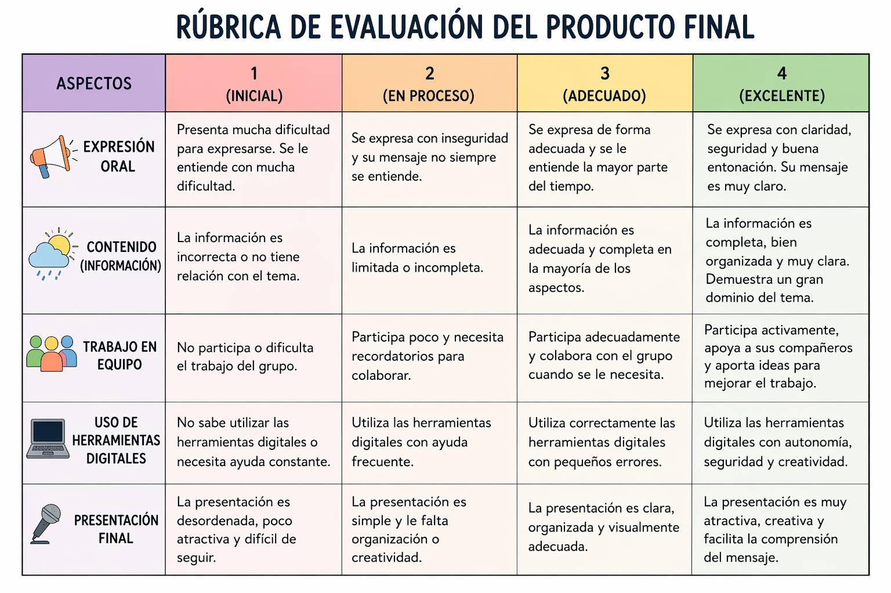
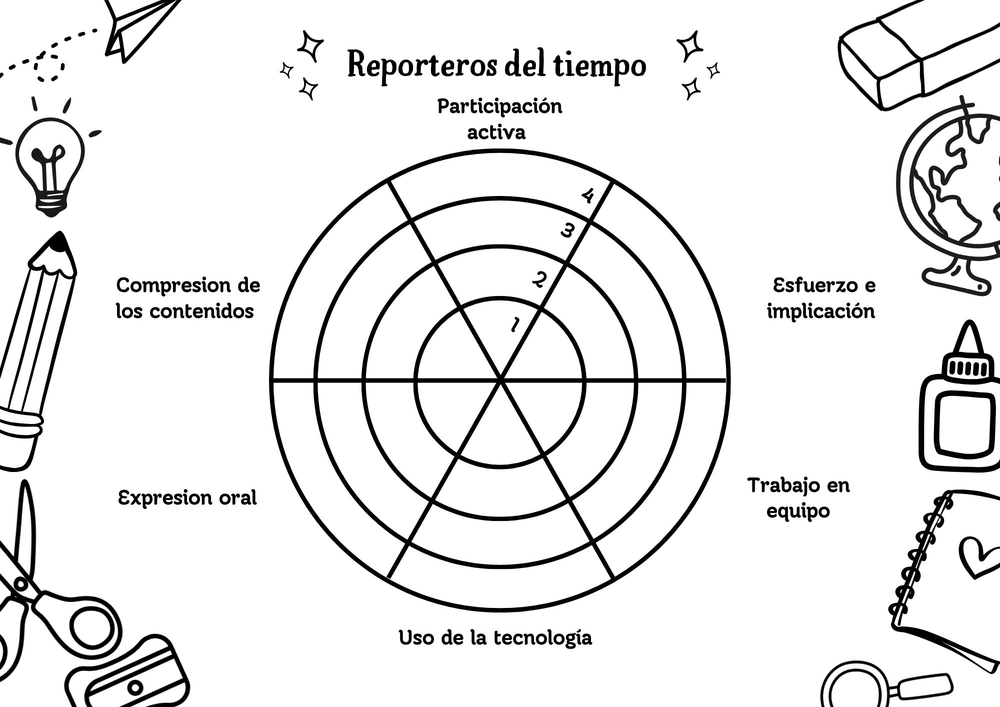

Texto
Evaluación
La evaluación será continua, formativa y tendrá en cuenta tanto el proceso de aprendizaje como el producto final.
Se valorará la participación del alumnado, el trabajo en equipo, la correcta utilización de herramientas digitales y la capacidad de comunicar información de forma clara.
Texto
Criterios de evaluación
- Identifica los elementos básicos del tiempo atmosférico.
- Busca y selecciona información relevante.
- Organiza la información de forma clara.
- Se expresa oralmente de forma adecuada.
- Utiliza herramientas digitales de manera responsable.
- Participa activamente en el trabajo en grupo.
Texto
Rúbrica de evaluación del producto final

Texto
Autoevaluación
El alumnado reflexionará sobre su propio aprendizaje mediante una diana de evaluación o preguntas como:
- ¿He participado en el trabajo en grupo?
- ¿He aprendido qué es el tiempo atmosférico?
- ¿He colaborado con mis compañeros?
- ¿Qué puedo mejorar?
